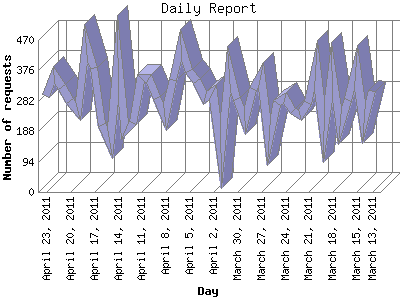

The Daily Report identifies the activity for each day within the reporting period. Remember that one page hit can result in several server requests as the images for each page are loaded.

| Day | Number of requests | Number of page requests | |
|---|---|---|---|
| 1. | March 13, 2011 | 312 | 11 |
| 2. | March 14, 2011 | 212 | 22 |
| 3. | March 15, 2011 | 388 | 15 |
| 4. | March 16, 2011 | 285 | 13 |
| 5. | March 17, 2011 | 204 | 18 |
| 6. | March 18, 2011 | 375 | 12 |
| 7. | March 19, 2011 | 189 | 11 |
| 8. | March 20, 2011 | 393 | 10 |
| 9. | March 21, 2011 | 274 | 17 |
| 10. | March 22, 2011 | 239 | 17 |
| 11. | March 23, 2011 | 249 | 22 |
| 12. | March 24, 2011 | 290 | 14 |
| 13. | March 25, 2011 | 276 | 8 |
| 14. | March 26, 2011 | 158 | 9 |
| 15. | March 27, 2011 | 362 | 21 |
| 16. | March 28, 2011 | 318 | 16 |
| 17. | March 29, 2011 | 219 | 16 |
| 18. | March 30, 2011 | 289 | 13 |
| 19. | March 31, 2011 | 380 | 16 |
| 20. | April 1, 2011 | 121 | 5 |
| 21. | April 2, 2011 | 310 | 12 |
| 22. | April 3, 2011 | 290 | 32 |
| 23. | April 4, 2011 | 343 | 9 |
| 24. | April 5, 2011 | 373 | 22 |
| 25. | April 6, 2011 | 454 | 17 |
| 26. | April 7, 2011 | 345 | 24 |
| 27. | April 8, 2011 | 231 | 6 |
| 28. | April 9, 2011 | 291 | 13 |
| 29. | April 10, 2011 | 354 | 16 |
| 30. | April 11, 2011 | 352 | 6 |
| 31. | April 12, 2011 | 213 | 21 |
| 32. | April 13, 2011 | 190 | 8 |
| 33. | April 14, 2011 | 413 | 13 |
| 34. | April 15, 2011 | 151 | 16 |
| 35. | April 16, 2011 | 207 | 12 |
| 36. | April 17, 2011 | 383 | 9 |
| 37. | April 18, 2011 | 462 | 13 |
| 38. | April 19, 2011 | 252 | 9 |
| 39. | April 20, 2011 | 281 | 6 |
| 40. | April 21, 2011 | 324 | 4 |
| 41. | April 22, 2011 | 363 | 9 |
| 42. | April 23, 2011 | 296 | 7 |
Most active day October 6, 2009 : 134 pages sent. 462 requests handled.
Daily average: 13 pages sent. 295 requests handled.
This report was generated on April 23, 2011 21:02.
Report time frame January 4, 2009 02:40 to April 23, 2011 23:20.
| Web statistics report produced by: analog 5.1 / Report Magic 2.21 |